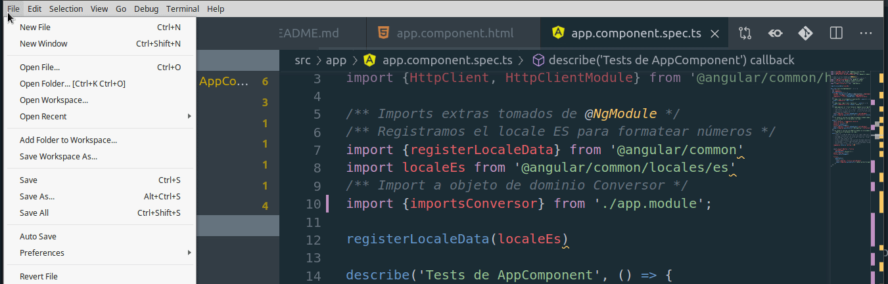

Contents |

Es necesario que instales las siguientes herramientas, en este orden:
npm install -g @angular/cli
Otra opción es utilizar Web Storm (de la suite de IntelliJ), si tienen una cuenta de la facultad pueden solicitar una licencia educativa. Solo que como no vamos a aprovechar todas las herramientas de este IDE poderoso quizás convenga ir por el Visual Studio Code.
A continuación te dejamos un video para mostrarte cómo configurar los plugins para que no exijan puntos y coma (;) al final de cada sentencia, algo que recomendamos.

Además, en tu proyecto, en el directorio raíz, vas a encontrar un archivo tslint.json, asegurate que tenga esta configuración:
"semicolon": [
false,
"never"
],
Typescript es el lenguaje de programación base para Angular. Tranquilo, es muy similar a los lenguajes orientados a objetos en los que ya trabajaste. Para iniciarte o para hacer consultas te dejamos estos links:
En la consola Git Bash o bien desde una terminal de Linux hacemos
ng new nombre-de-tu-app
cd nombre-de-tu-app
ng serve -open # o bien, la versión corta es ng s -o
Para ejecutar los tests de un proyecto, te posicionás en el directorio raíz y ejecutás desde la consola
ng test --watch --sourceMap=false
El siguiente es un ejemplo posible de un archivo .travis.yml para una aplicación Angular 8 (válido a octubre 2019):
sudo: required
dist: trusty
language: node_js
node_js:
- '10.12'
addons:
apt:
sources:
- google-chrome
packages:
- google-chrome-stable
- google-chrome-beta
before_install:
- npm install -g npm@latest
- export CHROME_BIN=chromium-browser
- export DISPLAY=:99.0
- sh -e /etc/init.d/xvfb start
before_script:
script: ng test --sourceMap=false --watch=false
Lo importante es que la versión de node que uses sea superior a 10.1
 Home
Home Artículos
Artículos